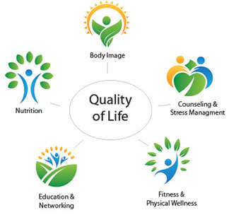

At The Cancer Support Center, we know that there are proven
ways to help patients recover and cope through the stress of
cancer and its treatments. We also provide support and
information to those who love and care for the cancer patients. We
offer comprehensive programs and services to meet you wherever
you are on your journey.
Programs are offered by highly-trained, committed professionals;
and, your wellness is always our goal. The Center is a place of
hope, help and healing – the spirit and mind.
Check out our program newsletter and calendar to see the wide
range of services offered, always free of charge. Our programs
are offered in the following areas: body image, education and
networking, fitness and physical wellness, counseling and stress,
and nutrition.
Our philosophy is from the moment you are diagnosed with cancer
you are a survivor. We have several program options for you:
Please look through the program options or calendar. Find something that sounds interesting to you & call or sign up online.
You can also visit our Center in Homewood or Mokena - we are here for you!
When someone in your life has cancer you are a caregiver. We think of caregivers as partners, famliy members, friends and co-
workers. A loved ones’ diagnosis has an impact on everyone involved. Caregiving can take an emotional and physical toll. We
have Caregiver Support groups, yoga for relaxation, a library full of information, counseling sessions to help you stay strong, and
more. Please look over our calendar for scheduled events and review the program options or call the Center to schedule a free
counseling session.